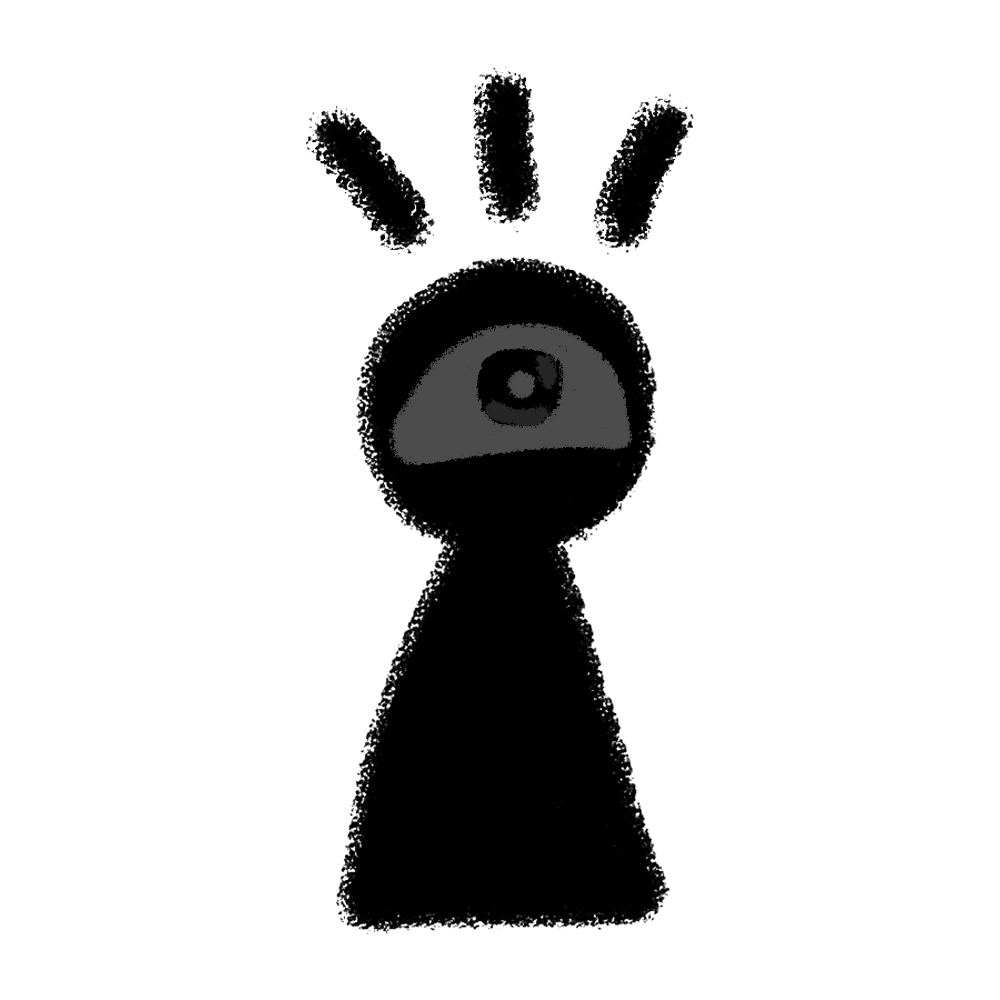

ADMIN ACCESS
☰
✖️ Fermer
Importer un Morceau
J'ai mes propres Stems
Image de Couverture (optionnel) :
Fichier Audio Principal (Optionnel si Stems fournies) :
Fichiers Stems
Voix (Vocals) :
Basses (Bass) :
Batterie (Drums) :
Autres (Other / Mélodie) :
Ajouter à la Bibliothèque
LIBRARY
Sélectionnez un album ci-dessus.